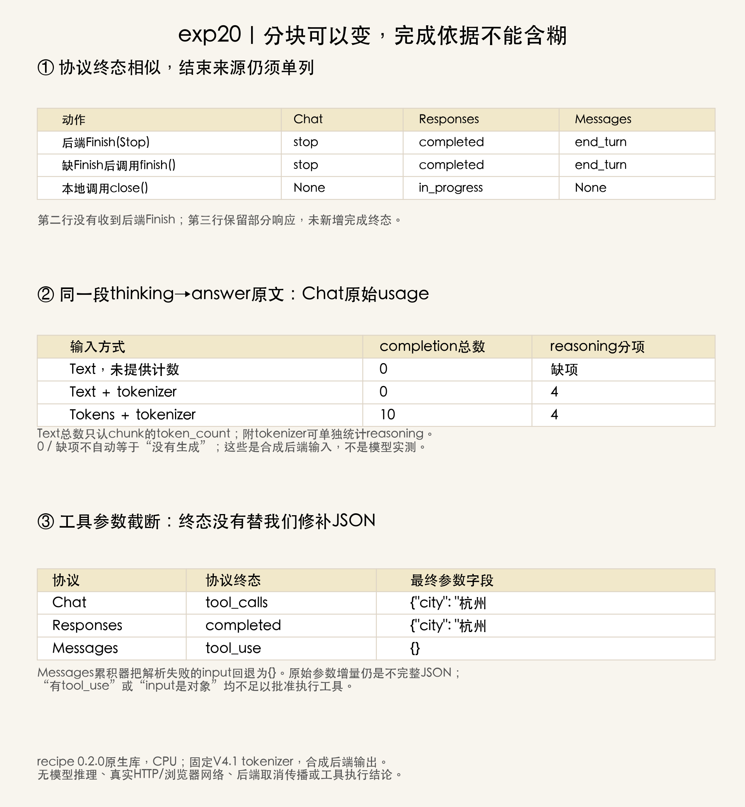

进化之路 · P5 · 2。上一站验车票，这一站听报站：一句话分几次传来，什么时候才算说完？
exp20 实际调用recipe原生流处理器，用合成后端输出核对分块、工具参数、终态和usage。
公交车上的广播有点断续：“下一站……”先传过来，“人民广场”随后才到。听众可以慢慢拼，可负责执行指令的人还要知道：这是完整站名，还是一句没说完的话？
流式接口也有这层区别。网关收到一个chunk，里面可能只有半个标记、一点工具参数，或者一个汉字所需的部分token。把每块直接当成完整消息处理，正常短句很容易跑通，遇到边界才出错。
上一站，我们看请求怎样转成模型输入。这一站沿相反方向走：后端交来的输出，怎样变成客户端能理解的事件。
块是怎样送来的，和一句话是否完整，是两件需要分别核对的事。
这次仍使用deepseek-recipe 0.2.0官方原生wheel，在CPU上运行。阅读源码固定到935817c，执行包和源码身份分别保留；没有证明二进制由该commit构建。
后端输出由固定fixture提供，不调用模型。我们给同一段原文三种切法：整块、逐单元、大小交替，再比较选定的内容和终止语义。
但“单元”有三种，不能混用。
Text层接收有效字符串。可以把</think>拆成几次送入，但不能递给它半个UTF-8字符的字节。
Tokens层接收token ID序列。一个汉字或emoji可能需要多个ID，解码器会等后续ID补齐。本轮先编码完整原文，再切同一份ID序列；不会把特殊标记拆开分别编码，又声称输入没变。
SSE字节层位于协议事件之后。我们先保存库产出的event/data，再包装为SSE，按字节拆分并增量读回。这里才故意切开中文、emoji和换行的字节边界。
这像广播稿、播音片段和线上传输的数据包。名字都叫“一段”，所在的层却不同。
正式集合有19个输入定义，包含11组主要输出，以及usage和生命周期反例；按协议、输入方式和切分展开为222条配置流。
这些流全部符合冻结预期。它们产生的事件又做了666次本地SSE字节重放，读回内容一致。记录器共有2004项声明检查，许多检查在不同配置中重复；这些数字都不是模型调用量、独立能力数或回答正确率。
普通文本、thinking转answer、一个工具、两个工具、停止串、长度限制、内容过滤、缺Finish、主动放弃和不完整标记，都留在集合里。
我们比较的是答案文本、reasoning、工具名称与参数、终态及停止串。工具ID带随机成分，另查非空和唯一性；不要求跨运行的ID、时间或事件条数完全相同。
完整响应也要交代来源：它由同一个原生处理器的事件，按顺序交给accumulate得到。整块和多块是同一套解析器的分块对照，不是两个独立实现互相证明正确。
因此，最终响应和原始事件都保留。尤其不能只看最后那份完整JSON，便把中间增量是否完整的问题略过去。
最值得留下的，是一组很短的反例。
我们输入“未完待续”，没有发送后端的InferenceChunk.finish，随后调用处理器的finish()，表示输入已到头，请排空缓冲。
库仍会给出正常协议终态：Chat为stop，Responses为completed，Messages为end_turn。processor.finished也变成了真。
它把输入流收尾了，却没有替我们证明后端为什么结束。若网络断开或上游异常也被调用方一律转成这种EOF，客户端就可能看到一份看似正常完成的响应。
所以记录里另留一栏：有没有收到后端Finish，结束依据是什么。 本轮缺Finish的路径标为“完成来源未证实”，不会因协议字段写了completed便升级为后端自然结束。
另一条路径输入“说到一半”后调用close()。已有部分文字仍保留，但没有新增成功终态。这里用本地close模拟放弃，尚未验证真实客户端断开怎样传播到后端。
第三条是命中停止串。解析器可能在后端Finish到来之前已经结束，此后继续push会报“已经完成”。运行器会停止提交剩余块，并记录未提交部分。解析器不再接收，仍不等于GPU已经停算。 后端取消传播要等后续网关实验再验。
后端Finish、输入关闭收尾、主动close，各自有自己的责任。不能因为都发生在最后几行代码，就共用一条成功路径。
我们用DeepSeek格式的工具标记，构造了一个天气查询：名称为weather，参数是{"city":"杭州"}。完整输入在不同切分下，都能还原名称与参数；两个工具的样例也保留了调用次序。
接着，把参数停在这里：
{"city": "杭州缺了结尾引号和右花括号。然后让合成后端发送Stop。
Chat与Responses的最终参数字段保留了这段不完整字符串。Messages的累积器尝试解析，失败后把最终input回退成了{}。三种协议的原始参数增量，仍然都是上面那段残缺内容。
与此同时，Chat的终态是tool_calls，Messages是tool_use，Responses是completed。
终态表示这条解析路径怎样结束，没有替工具执行器证明参数已经完整。 如果只检查“有工具名”“input是对象”，Messages里的回退值就可能把问题藏起来。
这次只记录调用名称、参数、ID和顺序，不执行任何工具。实际接入还需要保留原始参数，验证JSON完整性、schema及执行权限；不能收到几个增量，就边拼边执行。
像广播里说“请工作人员去……”，工作人员还得等目的地说全，而不是听见“请”便出发。
另一组输入是同一段合成原文：先给thinking内容，再用</think>切到答案“42”。没有模型真的进行这次思考；我们测的是库如何解释和计数。
以Chat的原始usage为例，下面的“输出”对应completion_tokens，不包含prompt；包含prompt的total_tokens在这三行分别为13、13、23。
Text默认的token_count为0，库不会因为附上tokenizer，就自动补算completion总数。但它可以单独统计reasoning，于是出现了“总数为0，reasoning为4”的组合。
Responses在没有这项reasoning计量时会给出默认0；Messages的原始usage没有相同的reasoning分项。原始字段各有协议表达，不能把缺项和默认0强行归成同一份已测数据。
本轮prompt侧的13个token、其中3个缓存命中，是fixture显式提供的合成数值；另有一条Text显式给7的对照，也只是验证计数传递。它们都不是模型计费证据。
所以账本要同时保存原始usage和来源：后端提供、chunk显式计数、库的分项分词，还是根本未计量。未计量就标未计量，不能见到0便写成“没有生成”。
命中停止串时也有类似区别：一个大块已经交来的尾部，和解析器结束后根本没再提交的小块，计数范围可能不同。内容相同，不自动保证成本相同。

三协议的收尾形式也不同。Chat的[DONE]由传输层另行包装；Responses有自己的completed或incomplete事件；Messages以message_stop收尾。不能给每种流都硬塞一个相同的结束标记。
本轮把真实库事件包装后，逐字节送进本地增量解码器。中文、emoji和事件分隔符跨块时，都能读回同一份event/data。再故意去掉最后一个空行，未被完整终止的最后事件不会因EOF而自动派发。
这一层参考WHATWG的SSE解析规则，但辅助器只实现本实验用到的字段与行边界，不实现浏览器重连；非法UTF-8采用明确报错的策略，也不宣称与浏览器错误恢复相同。
它验证了内存中的包装与读回。真实HTTP服务、代理缓冲、浏览器接收、断线和取消传播，都没有在这轮发生。
协议终态、SSE事件完整送达、后端自然结束，是三份证据。某一份齐了，不能替另两份签收。
这次留下的交接记录包括：原始后端片段及切分方式、库产出的全部事件、累积后的部分或完整响应、后端Finish是否出现、解析器状态、异常阶段，以及原始usage与来源。
Tokens缺tokenizer、logprob数量不匹配、重复后端Finish、完成后继续push、close后再finish，都按真实行为单列。错误发生前已经收到的事件不会被抹掉，记录器自身出错也不会冒充库按预期拒绝。
每条配置绑定完整输入与预期的摘要。改了输入、选项或验收要求，就不能沿用旧记录的通过状态。
到这里，我们还没有把模型网关接完，但已经可以少留几处含糊：这一段属于谁，参数拼全没有，这个0是否计量过，这次结束到底凭什么认定。
分块可以变，完成的依据要能追到来源。
{}，该怎样区分合法空参数与解析失败回退？下一站P5·3，继续核对结构化输出：声明了JSON或schema，究竟由哪一层保证它成立。
phase5/exp20/为固定输入、源码笔记和运行器；phase5/results/exp20/formal-v1/为正式逐条记录。口径：2026-10-23；真实recipe 0.2.0原生库、CPU、合成后端输出、固定V4.1 tokenizer；19个输入定义展开222条配置流。无模型推理、真实HTTP/浏览器网络、后端取消传播或工具执行结论。
[1] 固定版本流处理指南: https://github.com/deepseek-ai/deepseek-recipe/blob/935817c66f5d6e64838f419692545f06787e485f/docs/streaming.zh.md
[2] 原生processor: https://github.com/deepseek-ai/deepseek-recipe/blob/935817c66f5d6e64838f419692545f06787e485f/deepseek-recipe/src/stream/processor.rs
[3] 输出解析器: https://github.com/deepseek-ai/deepseek-recipe/blob/935817c66f5d6e64838f419692545f06787e485f/deepseek-recipe/src/stream/output_parser.rs
[4] Messages累积逻辑: https://github.com/deepseek-ai/deepseek-recipe/blob/935817c66f5d6e64838f419692545f06787e485f/deepseek-recipe/src/protocol/anthropic/messages/response/schema.rs
[5] WHATWG SSE解析规则: https://html.spec.whatwg.org/multipage/server-sent-events.html#parsing-an-event-stream